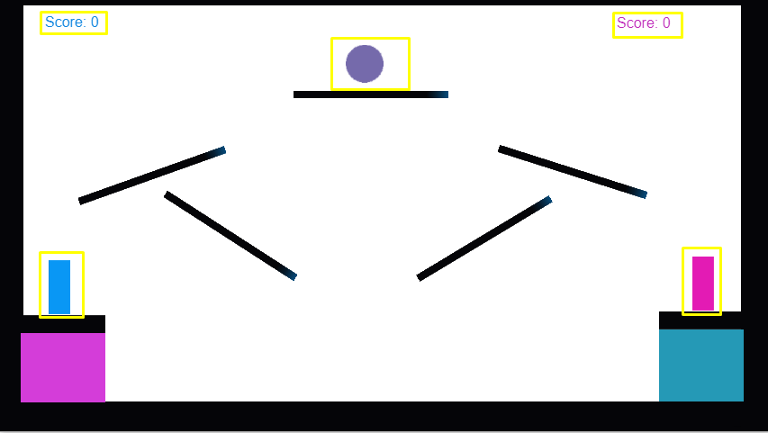
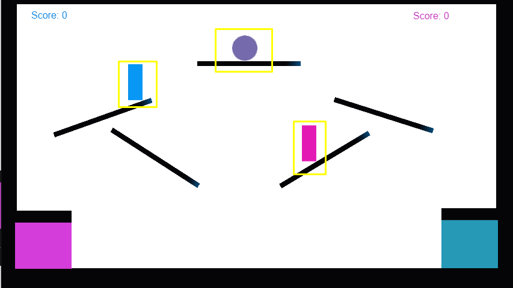
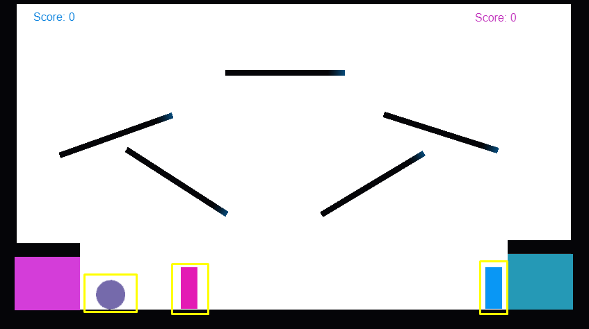
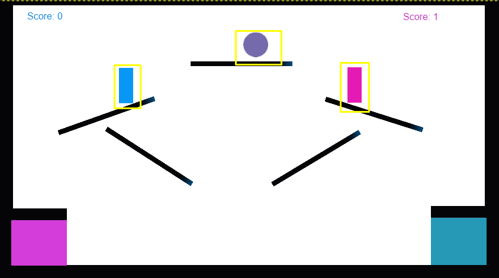

Construct 3 Introduction Game Demo
First...

The game begins. The Scores should both be zero. The ball drops from the top and settles upon the highest platform. The two players begin above the goals they defend.
Next...

The game begins. Here you can see two different routes taken by the players, both trying to get the ball firt. Remember to use your resources!
After...

Here the Pink Player is about to score! It is most likely that the Pink Player aquired the ball either before the Blue Player got it or they took it from the Blue Player.
Last...

After the Pink Player scores, the Pink Score now holds the value 1. The players from now on will begin in new positions on the platforms, giving a closer advantage to both. The ball will fall per usual, and the game continues until the users decide to stop.
Home Page